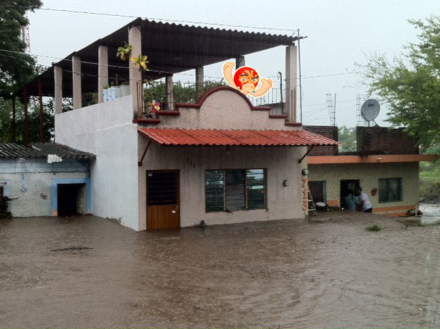

Me
Rafael Magaña
Freelance Rails developer and Sysadmin
Blogging about Ruby, Rails and Git in
http://foo.raflabs.com
Publishing open source contributions in
http://github.com/rafmagana
raf.magana@gmail.com
@rafmagana
Overall goals
- What kind of language Ruby is
- Implementations
- The Core , the Standard Library and RubyGems
- The language itself (data types, features)
Overall goals
- I
- will not
- teach you
- to program
- in Ruby
Kind of language
- General-purpose object-oriented language
- Scripting language
- High level
- Interpreted (not compiled)
- Dynamically typed (type a variable can hold can change)
- Strongly typed (Operations between types not allowed)
- Based on Perl, Smalltalk and Lisp
Implementations
- MRI (Matz) - Official Ruby 1.8 interpreter
- REE (Enterprise Edition) - Tweaked Ruby 1.8 branch
- YARV (Koichi) - Official Ruby 1.9 interpreter
- JRuby (Ruby on the JVM)
- Rubinius (Written in Ruby and C++, JIT)
- MacRuby (Objective-C runtime, Mac OS X)
The Ruby Core and
Standard Library
The Ruby Core
- Base classes and modules
- Don't need to require them manually
- Written in C
The Ruby Core
- Strings
- Numbers (integers, floats)
- Arrays
- Hashes
- Regular expressions
- Threads
- Times and date
- ...and many more
The Ruby Standard Library (StdLib)
- Additional packages
- Included in the standard Ruby distribution
- Need a manual require
- Written mostly in Ruby, C or both
The Ruby Standard Library (StdLib)
- Benchmark (Used time report)
- OptionParser (Command-line option analysis)
- Logger (Simple logging mechanism)
- Net::HTTP (Access WWW docs via HTTP)
- YAML (human-readable data serialization format)
- Test::Unit (Unit testing framework)
- WEBrick (HTTP web server)
require 'yaml'
require 'benchmark'
require 'logger'RubyGems
package management framework
- APT (apt-get in Debian linux)
- PECL and PEAR (PHP)
- PyPi (Python)
- CPAN (Perl)
Gems
- Rake (Build tool)
- Bundler (Gem dependency management framework)
- Rails (Web application framework)
- Unicorn (HTTP server)
- Capistrano (Web application deployment framework)
$ gem install rake$ gem install bundler -v 1.0.21$ gem install rails -v 3.1.1The Ruby Language

Everything is an object
Everything is an object
Everything is an object
Everything is an object
Object = state + behavior

- Object: A wrestler called Blue Demon
- State: Its color is blue
- Behavior: It wrestles
- Object: Instance of a class
- State: Instance variables
- Behavior: Methods
object.behavior() # => It does somethingblue_demon.wrestle()object.state = 'value'blue_demon.color = 'blue'Functional vs Object-oriented
PHP
strlen('string'); // 6Ruby
'string'.length # => 6Everything evaluates to true except nil or false
zero = 0
puts "It is true" if zerozero = 0
puts "It is true" if zero
# => "It is true"empty = ""
puts "It's true" if emptyempty = ""
puts "It's true" if empty
# => "It is true"false_value = false
puts "It's false" unless false_valuefalse_value = false
puts "It's false" unless false_value
# => "It's false"nil_value = nil
puts "It's false" unless nil_valuenil_value = nil
puts "It's false" unless nil_value
# => "It's false"zero = 0
puts "It's false" unless zerozero = 0
puts "It's false" unless zero
# => nilVariables are
dynamically typed
value = 10
value = "string"NO PROBLEM
value = 10
value = "string"Data are
strongly typed
"string" + 10
TypeError: Can't convert Fixnum into String"string" + 10.to_s"string" + 10.to_s
# => "string10"10 + "5"10 + "5"
String can't be coerced into Fixnum10 + "5".to_i10 + "5".to_i
# => 15Every method returns
the last evaluation
def sum
2 + 2
enddef sum
2 + 2
end
result = sumdef sum
2 + 2
end
result = sum
puts resultdef sum
2 + 2
end
result = sum
puts result
# => 4def question?
if true
"Yes"
else
"No"
end
enddef question?
if true
"Yes"
else
"No"
end
end
result = question?def question?
if true
"Yes"
else
"No"
end
end
result = question?
puts result
# => "Yes"Every expression
evaluates to an object
result = if true
"Yes"
else
"No"
endresult = if true
"Yes"
else
"No"
end
puts result
# => "Yes"Blocks
code blocks
do |param1, param2, ..., paramN|
...
end{ |param, param2, ..., paramN| ... }Blocks are nameless functions
Javascript example
myFunc = function(param1, param2)
{
...
}Javascript example
myFunc("arg1", "arg2")Javascript example
function(param1, param2)
{
...
}Ruby block example
{ |arg1, arg2, ..., argN|
...
}Most common usage for
blocks is loop abstraction
array.each do |element|
# do something with the >element<
endBy default every method can
receive a block as argument
class MyClass
def my_method
yield 'param1_value' if block_given?
end
endmy_class = MyClass.newmy_class.my_method do |param1|
param1
endmy_class.my_method do |param1|
param1 # => 'param1_value'
end
yield 'param_value'Exclamation and
Question mark methods
By convention
exclamation mark methods
replace the object
they are called on
my_string = "lorem"my_string = "lorem"
my_string.reverse # => "merol"my_string = "lorem"
my_string.reverse # => "merol"
my_string # => "lorem"my_string = "lorem"
my_string.reverse! # => "merol"my_string = "lorem"
my_string.reverse! # => "merol"
my_string # => "merol"By convention
question mark methods
return true or false
5.zero? # => false7.odd? # => true[1,2,3,4].include? 1 # => true"Rails".start_with? "P" # => falseParallel assignment
a = 'string'
b = 2a, b = b, aa # => 2
b # => 'string'The splat operator
def my_method(*params)
params
enddef my_method(*params)
params
end
my_method 'arg1', 'arg2', 'arg3'def my_method(*params)
params
end
my_method 'arg1', 'arg2', 'arg3'
# => ['arg1', 'arg2', 'arg3']colors = ['red', 'green']colors = ['red', 'green']
color1, color2 = *colorscolors = ['red', 'green']
color1, color2 = ['red', 'green']colors = ['red', 'green']
color1, color2 = ['red', 'green']
color1 # => 'red'colors = ['red', 'green']
color1, color2 = ['red', 'green']
color1 # => 'red'
color2 # => 'green'more on the splat operator
http://bit.ly/raflabs_splat
Duck Typing
Implicit vs explicit cast
Again...
Everything is an object
Objects are created based on blueprints
These blueprints are provided by classes
Every object is an instance of a class
Strings
'lorem'.capitalize # => 'Lorem''Ruby on Rails'.include? 'Ruby' # => true'Ruby on Rails'[8..12] # => 'Rails'Strings without interpolation (single quote)
'my string without interpolation'Strings with interpolation (double quote)
var = 'interpolation'
"my string with #{var}"
# => "my string with interpolation"Strings with interpolation (double quote)
"This is year #{2000 + 11}"
# => "This is year 2011"'Ruby'.class # => Stringlanguage = String.new 'Ruby'language = String.new 'Ruby'
language # => 'Ruby' String.instance_methods
[:reverse, :capitalize, :upcase, :downcase]String is a class
'string'.class # => StringString is an object too, a class object
String.class # => Class (instance of...)String = Class.newClass.instance_methods
# => [:new, :class, :superclass, ...]class Class < Object
...
endNumbers
1.odd? # => true1.even? # => false1.next # => 21.next.next # => 3 1 + 9 # => 10 1.+ 9 # => 10There are no operators in Ruby
Operators are methods!

1.class # => FixnumFixnum.instance_methods
# => [:*, :+, :-, :/, :**,...]0.0025.class # => FloatFloat.instance_methods
# => [:*, :+, :-, :/, :**,...]Type conversions
2.5.to_i # => 22.5.to_i # => 2
2.5.to_i.class # => Fixnum2.to_f # => 2.02.to_f # => 2.0
2.to_f.class # => FloatRanges
Ranges
- Represents an interval
- A set of values with a start and an end
1..10(1..10).to_a
# => [1, 2, 3, 4, 5, 6, 7, 8, 9, 10]1...10(1...10).to_a
# => [1, 2, 3, 4, 5, 6, 7, 8, 9]'a'..'e'('a'..'e').to_a
# => ["a", "b", "c", "d", "e"]('a'..'e').include? 'c' # => truerate = 45
case rate
when 0...10 then "Lowest rate"
when 10...50 then "Low rate"
when 50...90 then "High rate"
when 90...100 then "Highest rate"
end
# => "Low rate"(0...10).class # => RangeRange.instance_methods
[:first, :last, :include?, :step, ...]Range class API
Symbols
Duplicated objects
"ruby".object_id # => 2156749500
"ruby".object_id # => 2156743120Avoiding object duplication
:ruby.object_id # => 399368
:ruby.object_id # => 399368A symbol can return the
string representation of its name
:ruby.to_s # => "ruby"
:"ruby on rails".to_s # => "ruby on rails":ruby.class # => SymbolImportant fact
There is one symbol
for every method name
(:to_i, :to_s, :object_id, etc.)
Arrays
Arrays
Ordered, integer-indexed collections of any object
colors = ["cyan", "magenta", "yellow", "black"]colors = %w/cyan magenta yellow black/colors = %w/cyan magenta yellow black/
# => ["cyan", "magenta", "yellow", "black"]colors = %w/cyan magenta yellow black/
colors[0] # => "cyan"colors = %w/cyan magenta yellow black/
colors.first # = > "cyan"colors = %w/cyan magenta yellow black/
colors[1,2] # => ["magenta", "yellow"]colors = %w/cyan magenta yellow black/
colors[-1] # => "black"colors = %w/cyan magenta yellow black/
colors.last # => "black"colors = %w/cyan magenta yellow black/
colors[1..2] # => ["magenta", "yellow"]colors = %w(cyan magenta yellow black)
colors[2..-1] # => ["yellow", "black"]colors = %w[cyan magenta yellow black]
colors[2...-1] # => ["yellow"]colors.class # => ArrayArray.instance_methods
[:[], :[]=, :*, :+, :-, :<<, :each, ...]Square brackets are methods, nothing more!
colors = %w/cyan magenta yellow black/
colors[1..2] # => "black"colors = %w/cyan magenta yellow black/
colors.[](1..2) # => "black"colors = %w/cyan magenta yellow black/
colors[1] = 'white'colors = %w/cyan magenta yellow black/
colors.[]=(1, 'white')colors = %w/cyan magenta yellow black/
colors.[]=(1, 'white')
["cyan", "white", "yellow", "black"]cmyk = %w(cyan magenta yellow black)
rgb = %w{red green black}rgb * 2
["red", "green", "black",
"red", "green", "black"]rgb_and_cmyk = rgb + cmyk
["red", "green", "black",
"cyan", "magenta", "yellow", "black"]rgb_and_cmyk.uniq
["red", "green", "black",
"cyan", "magenta", "yellow"]http = %w{hyper text transfer protocol}http = %w{hyper text transfer protocol}
http.collect { |w| w[0].capitalize }http = %w{hyper text transfer protocol}
http.collect { |w| w[0].capitalize }
# => ["H", "T", "T", "P"]http = %w{hyper text transfer protocol}
http.collect { |w| w[0].capitalize }.join
# => "HTTP"known_people = %w{marie hellen yen}
excluded = %w{yen}invitees = known_people - excluded
# => ["marie", "hellen"]invitees << "alejandra"
# => ["marie", "hellen", "alejandra"]
invitees.each do |friend|
friend.invite()
end
invitees.each { |f| f.invite }Array class API
Hashes
Hashes
- key-based
- dictionaries, maps
ages = {"marie" => 17, :hellen => 20}ages = Hash[:marie, 17, :hellen, 20]
# => {:marie => 17, :hellen => 20}ages[:marie] # => 17Creating empty hashes
languages = {}
languages[:compiled] = %w{Java Smalltalk}
languages[:interpreted] = %w{Perl Ruby}languages[:compiled]
# => ["Java", "Smalltalk"]languages[:interpreted]
# => ["Perl", "Ruby"]Hashes can be used as keyword arguments
def my_method(params = {})
params[:key1]
params[:key2]
endmy_method({:key1 => :value1, :key2 => []})my_method :key1 => :value1, :key2 => []You can use any object as key,
not only strings or symbols
foo = [1, 2, 3]foo = [1, 2, 3]
bar = Hash[foo, :lorem]foo = [1, 2, 3]
bar = Hash[foo, :lorem]
# => {[1, 2, 3]=>:lorem}bar[foo] # => :lorembar[foo] # => :loremNOTE: Make sure you read about the Hash#rehash method
bar.class # => HashHash.instance_methods
["[]", "[]=", "has_key?", "each", ...]Hash class API
Regular Expressions
text = <<MESSAGE
Hey dude, here is my alternative
email address: john@doe.com
MESSAGEpattern = /(?<name>([\w-]+))@[\w-]+\.+[\w-]+/text = <<MESSAGE
Hey dude, here is my alternative
email address: john@doe.com
MESSAGE
matches = pattern.match texttext = <<MESSAGE
Hey dude, here is my alternative
email address: john@doe.com
MESSAGE
matches = pattern.match text
# => #<MatchData "john@doe.com" name:"john">matches[:name] # => "john"text = <<MESSAGE
Hey dude, here is my alternative
email address: john@doe.com
MESSAGE
pattern = /([\w-]+)@[\w-]+\.+[\w-]+/text.scan pattern
# => [["john"]]text.scan(pattern).flatten
# => ["john"]text.scan(pattern).flatten.first
# => "john"/pattern/.class # => Regexpnil, true, false
- nil evaluates to false
- false evaluates to false
- true and everything else evaluates to true
nil represents nullity, nothing
and again, remember...
Everything is an object
yes, nil is an object
nil.class # => NilClassmy_object = nil
my_object.nil? # => truefoo = nilfoo = nil
puts "nil evaluates to false" unless foofoo = nil
puts "nil evaluates to false" unless foo
# => "nil evaluates to false"yes, true is an object
true.class # => TrueClassand, yes, false is an object too
false.class # => FalseClassNilClass, FalseClass and TrueClass
are singleton classes
NilClass, FalseClass and TrueClass
are singleton classes
cannot be instantiated more than once
nil, false and true
are the unique instances of
its parent classes
my_nil = NilClass.new
# => undefined method `new'Basic Datatypes
Basic Datatypes (classes)
Class
String
Numeric
Symbol
Range
Array
Hash
Regexp
TrueClass, FalseClass and NilClassClass objects
Class and instance methods
Animal = Class.newclass Animal
def initilize
#executed when Animal.new is called
end
def instance_method
'instance_method'
end
def Animal.class_method
'class_method'
end
endcat = Animal.new
cat.instance_method # => 'instance_method'
cat.class_method # => undefinedAnimal.class_method
# => 'class_method'
Animal.instance_method # => undefinedClass, instance and
class instance variables
Class variables
Available to whole inheritance tree
class Animal
@@class_variable = :foo
def instance_method
@@class_variable
end
def Animal.class_method
@@class_variable
end
end
Animal.new.instance_method # => :foo
Animal.class_method # => :fooInstance variables
Available only to a specific instance of the class
class Animal
def initilize(value)
@instance_variable = value
end
def instance_method
@instance_variable
end
def Animal.class_method
@instance_variable
end
endAnimal.new(:foo).instance_method # => :fooAnimal.class_method # => nil
@instance_variable not initializedClass instance variables
Look like instance variables
Private to the class
Unavailable to the inheritance tree
class Animal
@class_instance_variable = :foo
def instance_method
@class_instance_variable
end
def Animal.class_method
@class_instance_variable
end
endAnimal.new.instance_method # => nil
@class_instance_variable not initializedAnimal.class_method # => :fooclass Animal
@@class_variable = :foo
@class_instance_variable = :bar
def initialize
@instance_variable = :baz
@@class_variable # => :foo
end
def instance_method
@instance_variable # => :baz
end
def self.class_method
@class_instance_variable # => :bar
end
endAccessors (setters/getters)
In Ruby we don't access variables directly
class Foo
def initialize
@bar = 'lorem'
end
endfoo = Foo.newfoo.@bar
# => syntax error, unexpected tIVARfoo.bar
# => undefined method 'bar'Ruby is telling us something very important here...
The thing after the dot must be always a method
We need to create methods to access variables
class Animal
def initialize
@name = ''
end
def name
@name
end
def name=(value)
@name = value
end
endA shorter version
class Animal
attr_accessor :name
enddog = Animal.newdog.name = 'terry'dog.name # => "terry"We are not accessing the @name variable directly
we do it through a method called name
In OOP that is called Encapsulation
Only the object itself can change its state
class Animal
attr_accessor :name, :color
attr_writer :dob
attr_reader :number_of_feet
endMethod visibility
class BaseDummy
public
def public_method
'public'
end
private
def private_method
'private'
end
protected
def protected_method
'protected'
end
endbase_dummy = BaseDummy.newbase_dummy.public_method # => 'public'base_dummy.private_method
# => Errorbase_dummy.protected_method
# => Errorclass Dummy < BaseDummy
def crash!
protected_method
end
enddummy = Dummy.newdummy.private_method
# => Errordummy.crash! # => 'protected'Scope
Introducing self
A reference to the current receiver
We send a message(method) to a reveiver
receiver.messageIf we omit the receiver,
it defaults to self
def top_level_method
'hey'
endtop_level_method # => "hey"self.top_level_method # => "hey"self # => mainself.class # => ObjectThe top level is an object
self # => main
class SelfStudy
self # => SelfStudy
end
self # => main
class SelfStudy
def instance_method
self # => #<SelfStudy:0x1011b3ad0>
end
end
class SelfStudy
def self.class_method
self # => SelfStudy
end
endRemeber this
self is not this
Sharing behavior
1. Inheritance
class Animal
def walk
...
end
endclass Animal < Object
def walk
...
end
endclass Dog < Animal
endkeiser = Dog.new
keiser.walkAnimals and People can walk, let's share that behavior
2. Mix-ins
module Walker
def walk
'walking...'
end
end
Walker.class # => ModuleModules are objects too
Bringing module methods as instance methods
class Animal
include Walker
end
class Person
include Walker
endAnimal.new.walk # => 'walking...'Person.new.walk # => 'walking...'Bringing module methods as class methods
class Animal
extend Walker
end
class Person
extend Walker
endAnimal.walk # => 'walking...'Person.walk # => 'walking...'Classes can be re-opened
"ruby".decorate # => undefined methodclass String
def decorate
"**_ #{self} _**"
end
end"ruby".decorate
# => "**_ ruby _**"1000.decorate
# => undefined method 'decorate'class Object
def decorate
"**_ #{self} _**"
end
end"ruby".decorate
# => "**_ ruby _**"1000.decorate
# => "**_ 1000 _**":post.decorate
# => "**_ post _**"%w/ruby on rails/.decorate
# => "**_ ["ruby", "on", "rails"] _**"Using mix-ins to add features to certain classes
module Decorable
def decorate
"**_ #{self} _**"
end
endclass String
include Decorable
endclass Fixnum
include Decorable
endclass ClassOnSteroids
include TextUtil, Loggeable, MyHelper
extend Configurable, Loggeable
endClosures
Do you remember
what blocks are?
Blocks are
nameless functions
do |param1, param2|
# code here
enddef name(param1, param2)
# code here
enddef (param1, param2)
# code here
endAlmost
Everything is an object
Blocks are not objects
A block become an object
when we bound it to a variable
my_object = { |params| ... }my_object = { |params| ... }
# => Syntax errorHow do we create
closures out of blocks?
closure = Proc.new { |params| ... }closure = Proc.new { |params| ... }
closure.call 'arg'closure = Proc.new { |param| ... }
closure.call 'arg'
# => result of executing ...Blocks are
nameless functions
Closures are
nameless function objects
closure = Proc.new { |params| ... }
closure.class # => ProcProc.instance_methods
# => [:call, :binding, :yield,
# => :parameters, :lambda?, ...]Closures can be passed around
as parameters and called later
They can refer to variables from
the context (binding) in which
they were created
Different ways
to create a closure
Proc.new { |params| ... }Proc.new { |params| ... }
proc { |params| ... }Proc.new { |params| ... }
proc { |params| ... }
lambda { |params| ... }Proc.new { |params| ... }.class # => Proc
proc { |params| ... }.class # => Proc
lambda { |params| ... }.class # => ProcProc.new/proc
Closures with optional parameters
closure = proc { |param| param }closure = proc { |param| param }
closure.callclosure = proc { |param| param }
closure.call # => nillambda
Closures with required parameters
closure = lambda { |param| param }closure = lambda { |param| param }
closure.callclosure = lambda { |param| param }
closure.call
# => wrong number of arguments (0 for 1)closure = lambda { |param| param }
closure.call 'arg' # => 'arg'Converting closures
back to blocks
multiplier = lambda { |p, n| p * n }multiplier = lambda { |p, n| p * n }
(3..5).reduce { |p, n| p * n }multiplier = lambda { |p, n| p * n }
(3..5).reduce { |p, n| p * n }
# => 60multiplier = lambda { |p, n| p * n }
(3..5).reduce multipliermultiplier = lambda { |p, n| p * n }
(3..5).reduce multiplier
# => wrong number of arguments(1 for 0)Let's turn it into a block
The & to the rescue
multiplier = lambda { |p, n| p * n }
(3..5).reduce &multiplier
# => 60(1..9).reduce &multiplier # => 362880
multiplier.call 'b', 5 # => 'bbbbb'('a'..'c').collect &:capitalize('a'..'c').collect &:capitalize
# => ['A', 'B', 'C']:capitalize.class # => Symbol:capitalize.class # => Symbol
:capitalize.methods # => [:to_proc, ...]& calls the to_proc method
class Symbol
def to_proc
proc { |obj| obj.send self }
end
end:capitalize.to_proc:capitalize.to_proc
{ |obj| obj.send :capitalize }:capitalize.to_proc
{ |obj| obj.send :capitalize }
'ruby'.send :capitalize # => 'Ruby'Working with closures
in your own methods
class MySQL
private
def connect
end
def disconnect
end
public
def when_connected
conn = connect
yield conn if block_given?
disconnect
end
endclass MySQL
private
def connect
end
def disconnect
end
public
def when_connected(&closure)
conn = connect
closure.call conn if closure
disconnect
end
endsql = MySQL.new :database => :my_projectsql.when_connected do |connection|
now = connection.query "SELECT NOW();"
...
end